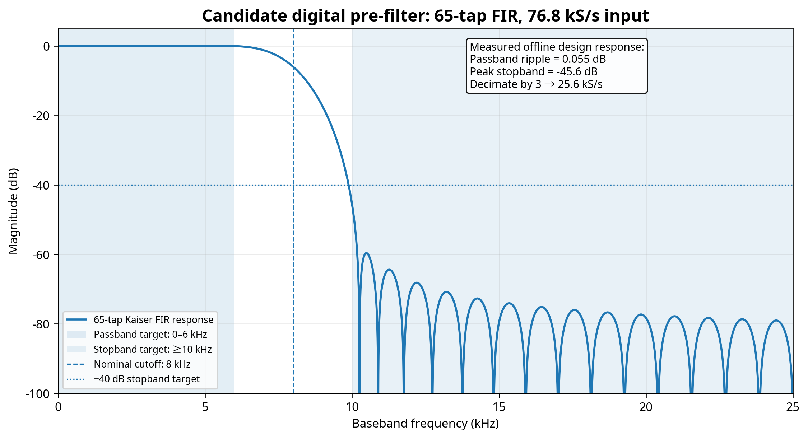
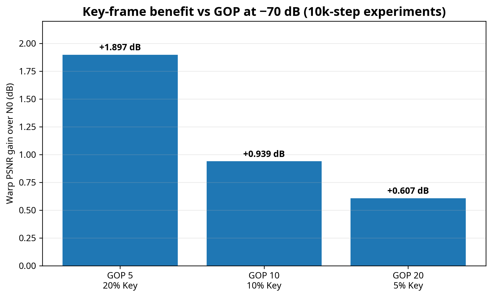

版本： v1.2（单节点视频闭环与多节点复用方案更新）
日期： 2026-11-23
研究阶段：
单节点视频采集—反向散射—接收/播放端到端链路已搭通；离线恢复模型已有实验；真实 RF 定量指标及多节点 TDMA/FDMA 尚待验证。
阅读说明
- 已验证结果：来自当前
PROJECT_SUMMARY.md（2026-11-07），属于现有 KFM-Restore 数据集实验。- 理论计算：由图像参数、调制方式和协议开销假设计算。
- 设计目标：建议用于第一轮硬件原型，不代表已经测得。
- 待验证假设：必须通过 DAC、Varactor、SDR 和多节点实验验证。
本文不把理论频谱预算写成实测结果，也不把离线模型恢复结果等同于真实 RF 链路的恢复增益。2026-11-23 的单节点闭环进度来自项目负责人状态说明；射频与功耗测量仍需提供。
面向多个低功耗视觉节点，采用单载波激励的背散射方式传输低帧率视频：
核心研究问题： 在相同恢复质量约束下，主动限制模拟视频带宽，并用稀疏数字 Key 补偿信息损失，能否降低多节点视觉传感网络的总频谱占用和节点能耗？
| 参数 | 首版数值 | 状态 |
|---|---|---|
| 摄像头 | HM0360 黑白 CMOS | 器件方案 |
| MCU | STM32U575 | 器件方案 |
| 分辨率 | 320×240 | 设计基线 |
| 帧率 | 1 FPS | 设计基线 |
| 像素格式 | RAW8 | 设计基线 |
| 原始像素速率 | 76.8 kS/s | 计算值 |
| 原始图像数据率 | 614.4 kbps/node | 计算值 |
| Key 策略 | GOP=10，10% Key | 首版策略 |
| 数字预滤波 | 65-tap FIR，名义截止 8 kHz | 离线候选设计 |
| FIR 输出采样率 | 25.6 kS/s | 计算值 |
| 模拟 RF 99% OBW | ≤20 kHz/node | 目标，未实测 |
| 模拟 FDMA 信道间隔 | 24 kHz/node | 目标，未实测 |
| 数字 Key 通道 | 1 Mbps gross QPSK PHY | 预算假设 |
| 接收端 | SDR + PC/GPU | 系统方案 |
在 10 个节点、GOP10、QPSK、滚降系数 0.25 的预算条件下：
这两个节省比例是设计预算，不是已经测得的系统性能。 其中最关键的前提是：模拟链路实际 99% OBW 能达到 20 kHz/node，并且频移结构能够实现节点间分离。
图1：单节点混合视频反向散射。模拟模式由 DAC 控制 Varactor，数字模式 DAC 关闭且 Varactor 保持确定偏置，两类信号异频。
最新里程碑： 单节点视频采集 → 反向散射发送 → 接收处理 → 画面播放端到端链路已搭通。本稿尚无对应 IQ、波形、射频频谱、画质、功耗和稳定性数据；能够播放画面不等同于带宽或功耗目标已经达标。
| 模块 | 当前状态 |
|---|---|
| 采集与本地控制 | 单节点采集链路已搭建；实际参数待归档 |
| 采集 → 反向散射 → 接收 → 画面播放 | 已打通单节点端到端链路（2026-11-23 项目进度） |
| DAC / Varactor / RF 调制链路 | 已纳入系统链路；DAC 波形、Γ(V)、RF OBW 待测量 |
| 数字关键帧模式切换 | 数字时隙 DAC 关闭、Varactor 固定偏置为设计要求；实际时序及性能待记录 |
| KFM-Restore 恢复模型 | 已有多组离线数据集实验；真实 RF 数据适配待验证 |
| GOP 与 Key 比例 | 已有 -70 dB 条件离线实验 |
| 数字低通与抽取 | 已离线设计候选参数；尚无相应实测带宽结论 |
| 多节点模拟 FDMA + 数字 TDMA | 尚未完成系统级实验 |
| 频谱节省与功耗优势 | 理论预算/目标，尚无量化系统结论 |
阶段边界：单节点链路已搭通；数字 Key 链路的实际净速率、DAC 关闭与偏置保持时序、频带隔离、多节点模拟 FDMA + 数字 TDMA、带宽与功耗节省仍需逐项验证。
工业仪表、农业诱捕器、仓储货位、野外设施和分布式环境监测等场景，可能需要部署多个低帧率摄像头节点，并将图像集中传回一个接收终端。
这些场景通常具备：
本研究面向的是多节点、低帧率、低功耗、关键帧驱动的视觉传感网络，不是传统高清连续监控。
320×240、RAW8、1 FPS 时，每个节点每秒产生 76,800 个像素，每个像素 8 bit：
10 个节点的原始数据率达到 6.144 Mbps。若直接使用低阶数字背散射调制，多个节点需要占用较宽的频谱。
另一方面，纯模拟背散射虽然可以避免逐像素 8-bit 符号传输，但会受到噪声、相位漂移、幅相非线性和像素间串扰影响。
本研究的核心不是单纯”模拟背散射传视频”，而是主动控制模拟路径的信息损失，再由数字 Key 提供稀疏但可靠的参考信息：
核心假设：
其中：
这一关系需要在不同滤波带宽下进行匹配训练和测试，不能预设必然单调成立。
设计参数：
| 参数 | 数值 |
|---|---|
| 图像尺寸 | 320×240 |
| 灰度位宽 | 8 bit |
| 帧率 | 1 FPS |
| 单帧像素数 | 76,800 |
| 单帧数据量 | 614,400 bit = 76.8 kB = 75 KiB |
| 每节点原始数据率 | 614.4 kbps |
全数字 QPSK 基线采用升余弦成形，滚降系数 ：
单节点：
10 节点：
这是未压缩 RAW8、无 FEC 和协议开销的 QPSK 理论基线。BPSK 对应约 768 kHz/node、7.68 MHz/10 nodes。
建议首版采用 8 kHz 名义截止频率，目标是把每节点模拟 RF 99% OBW 控制在 20 kHz 以内。
推荐数字预滤波参数：
| 参数 | 候选值 |
|---|---|
| 输入像素采样率 | 76.8 kS/s |
| FIR 类型 | Kaiser-window FIR |
| Tap 数 | 65 |
| Kaiser β | 5.65 |
| 通带边缘 | 6 kHz |
| 名义截止频率 | 8 kHz |
| 阻带起点 | 10 kHz |
| 离线设计通带纹波 | 约 0.055 dB |
| 离线设计阻带峰值 | 约 −45.6 dB |
| 抽取因子 | 3 |
| DAC 输出速率 | 25.6 kS/s |
65-tap 线性相位 FIR 群延迟：
采用 polyphase decimator 时，输出侧运算量约为：
该运算量对 STM32U575 是一个值得验证的低复杂度候选，但 MCU 能耗必须实测。

图2：65-tap FIR 的离线频率响应
重要解释： 图2是离线 FIR 设计响应，不是 DAC 或 RF 实测频谱。通带 0–6 kHz、阻带从 10 kHz 开始。若采用实值双边带反射调制，10 kHz 的基带边缘对应约 20 kHz 的 RF 总带宽量级。因此把 20 kHz/node 作为 99% OBW 目标是合理的首轮设计点，但最终必须由 SDR/频谱仪测量。
此外，滤波作用于一维逐行像素流，行末到下一行行首可能发生跨行混合。训练退化和硬件发送必须使用一致的扫描顺序，并测试行间重置/保护策略。
每节点目标： - 模拟 RF 99% OBW：20 kHz； - 节点信道间隔：24 kHz； - 其中约 4 kHz 用于相邻节点保护。
10 个节点：
图3：3 节点系统架构示意；频谱预算仍按下文 10 节点计算。本图不代表多节点实测。
数字 Key 在所有节点共享的数字频带上以 TDMA 轮流发送；模拟视频在另一频带中使用节点专属的窄 FDMA 子带。发送数字 Key 的节点在对应时隙关闭 DAC、维持 Varactor 确定偏置并暂停本节点模拟支路；其他节点可继续使用各自模拟子带。所有信号由同一个接收机集中解调和重建。
必须强调：Varactor 连续改变阻抗本身不会自动产生 FDMA。 每个节点仍需独立频移机制，例如节点专属子载波时钟和 RF Switch/阻抗切换结构。若频移产生不可忽略的上下镜像侧带，必须把镜像频带也纳入频谱预算。
GOP10 表示每 10 帧发送一张完整数字 Key，Key 比例 10%。
单节点平均 Key 数据率：
10 个节点：
首版假设共享 QPSK 数字 Key 通道的 gross PHY bit rate 为 1 Mbps，滚降系数 ：
若暂按 20% FEC、同步和协议开销估算：
10 节点 GOP10 的平均 Key 载荷占用：
一张 Key 的净载荷发送时间：
若 10 个节点的 Key 时刻错开，平均每秒约有一张 Key 到达共享数字信道，理论上每秒剩余约 232 ms 用于保护、控制和重传。若节点同步同时触发 Key，则会产生突发排队，必须做错峰调度。
混合系统预算：
相对全数字 QPSK 的节省：
图4：10 节点全数字 QPSK 与混合方案的频谱预算对比
| 方案 | 10 节点总带宽 | 相对全数字 QPSK 节省 |
|---|---|---|
| 全数字 QPSK | 3.840 MHz | — |
| 混合：1 Mbps gross QPSK PHY | 0.890 MHz | 76.8% |
| 混合：1 Mbps net payload | 1.046 MHz | 72.8% |
如果要求 1 Mbps 净载荷，按 20% 开销需要 1.25 Mbps gross PHY：
当前最适合组会展示的结论： 在 10 节点、GOP10、20 kHz/node 模拟 OBW 目标下，混合方案的预算约 0.89–1.05 MHz，相对 3.84 MHz 全数字 QPSK 基线，理论节省约 72.8%–76.8%。
这不是实测结果；实际结果取决于模拟 OBW、镜像侧带、数字链路净载荷和保护带。
当前 -70 dB 条件下，已有 GOP 实验结果：
| GOP | Key 比例 | Key 数/100 帧 | Warp 相对 N0 PSNR 增益 |
|---|---|---|---|
| 5 | 20% | 20 | +1.897 dB |
| 10 | 10% | 10 | +0.939 dB |
| 20 | 5% | 5 | +0.607 dB |
在 10 节点预算中，按 20% PHY 开销，并保持约 76.8% 数字 Key 载荷利用率：
| GOP | 10 节点平均 Key 数据率 | 数字 gross PHY | 数字 QPSK 带宽 | 混合总预算* | 相对全数字 QPSK 节省 |
|---|---|---|---|---|---|
| 5 | 1.2288 Mbps | 2 Mbps | 1.25 MHz | 1.515 MHz | 60.5% |
| 10 | 614.4 kbps | 1 Mbps | 625 kHz | 890 kHz | 76.8% |
| 20 | 307.2 kbps | 0.5 Mbps | 312.5 kHz | 577.5 kHz | 85.0% |
*混合总预算包含 240 kHz 模拟频带和 25 kHz 频带间保护。

图5：GOP 与数字关键帧恢复增益
首版建议 GOP10。 GOP5 的恢复增益更高，但数字 Key 频谱和能耗开销更大；GOP20 更省频谱，但当前 -70 dB 恢复增益下降。
依据 PROJECT_SUMMARY.md（2026-11-07）：
| 项目 | 当前配置 |
|---|---|
| 视频序列 | 270 |
| 每序列帧数 | 100 |
| Clean 帧总数 | 27,000 |
| 退化条件 | 0、−10、−20、−40、−50、−60、−70 dB、wireless |
| Train | 216 序列，约 80% |
| Validation | 27 序列，约 10% |
| Test | 27 序列，约 10% |
划分按序列进行，避免同一序列泄漏到不同集合。
GOP10 时，每序列 10 张 Key、90 张 No-Key；每个退化条件下有：
当前主评价对象只包括 No-Key 帧。Clean Key 作为参考输入，不经过恢复头，也不计入主恢复指标。
当前 PROJECT_SUMMARY.md 中的主模型是
models.py 的 ReferenceWarpNet，模型入口为
warp。
图6：ReferenceWarpNet / Warp 的可编辑矢量网络结构示意。前后 Key Encoder 共享参数，1/4 和 1/8 尺度估计偏移并执行可微特征对齐，门控融合后预测残差并恢复当前非关键帧。
结构要点： 1. 当前退化 No-Key 帧进入 Observation
Encoder，得到多尺度观测特征； 2. 前后 Clean Key 通过共享 Key Encoder；
3. 在 1/4 和 1/8 尺度预测 flow/offset； 4. 使用 grid_sample
对 Key 特征进行可微分 warp； 5. Confidence Gate 根据局部参考可靠性控制
Key 特征； 6. Fusion Decoder 预测当前帧残差，输出恢复结果。
训练损失为 Charbonnier reconstruction loss、gradient loss 和 multiscale loss。当前正式训练配置包括 128×128 crop、batch size 16、base channels 32，训练 10,000 或 20,000 steps。
| 条件 | 输入 PSNR | N0 PSNR | NAFNet PSNR | Warp v2 PSNR | Warp 相对 N0 |
|---|---|---|---|---|---|
| −70 dB | 14.797 | 22.434 | 22.425 | 23.802 | +1.368 dB |
| −60 dB | 19.840 | 26.449 | 26.627 | 26.666 | +0.217 dB |
−70 dB 条件下 Warp v2 相对 N0： - PSNR 增益：+1.368 dB； - 95% bootstrap CI：[+1.302, +1.435] dB； - SSIM 增益：+0.07396； - MS-SSIM 增益：+0.05613； - MAE 下降：0.01113。
−60 dB 条件下 Warp v2 相对 N0： - PSNR 增益：+0.217 dB； - 95% bootstrap CI：[+0.206, +0.229] dB； - SSIM 增益：+0.00756； - MS-SSIM 增益：+0.00520； - MAE 下降：0.00099。

图7：−70 dB 和 −60 dB 条件下的当前恢复结果
结论： 数字 Key 的收益依赖退化强度。−70 dB 条件下收益明显；−60 dB 条件下收益较小但在 20k-step Warp v2 中仍为正。
第一阶段结果：
| 条件 | 输入 PSNR | N0 PSNR | Warp PSNR | Key 增益 |
|---|---|---|---|---|
| −50 dB | 22.699 | 29.107 | 29.142 | +0.035 dB |
| −70 dB | 14.797 | 22.434 | 23.373 | +0.939 dB |
| wireless | 19.931 | 27.412 | 27.604 | +0.192 dB |
这说明不能声称 Key 在所有信道条件下都有相同幅度的收益。越严重的退化条件，Key 的潜在价值越明显，但仍需在新设计的低通模拟退化数据上重新验证。
−70 dB、每个模型训练 10,000 steps：
| GOP | Key 比例 | N0 PSNR | Warp PSNR | Key 增益 |
|---|---|---|---|---|
| 5 | 20% | 22.438 | 24.335 | +1.897 dB |
| 10 | 10% | 22.434 | 23.373 | +0.939 dB |
| 20 | 5% | 22.440 | 23.047 | +0.607 dB |
GOP 越小、Key 越密集，当前 Warp 的恢复收益越大。不同 GOP 对应的 No-Key 测试样本数不同，因此这些结果应解释为当前协议下的趋势，不能视为完全相同测试帧上的单一因果对比。
−70 dB 条件下： - N0：22.434 dB； - NAFNet：22.425 dB； - Warp v2：23.802 dB。
NAFNet 与 N0 基本持平，Warp v2 相对 NAFNet 仍高约 1.377 dB。这支持 Warp 的主要收益来自参考帧信息，而不是单纯来自更大的单帧去噪器。
已证明： - 在当前 MetaIoT-WHU-Intrant 退化数据上，Clean Key 能在若干条件下改善 No-Key 恢复； - −70 dB 下 Warp v2 相对 N0 有 +1.368 dB 增益； - GOP 越小，当前 −70 dB 实验的 Key 增益越大； - 当前模型具备多尺度对齐和参考置信度控制。
尚未证明： - 这些增益能在 8 kHz 低通、DAC、Varactor 和真实 RF 背散射链路下保持； - 数字 Key 对”主动低通滤波造成的信息损失”有相同幅度的补偿能力； - 多节点模拟 FDMA 和数字 TDMA 已经实现。
下一步必须使用真实串行像素低通模型生成训练数据，并最终用真实 RF 采集数据验证。
| 风险 | 为什么重要 | 最直接的验证 |
|---|---|---|
| 真实 RF OBW 可能超过 20 kHz | 直接改变 890 kHz 预算 | SDR 测 99% OBW 和邻道泄漏 |
| Varactor 幅相非线性 | 电压不等于线性相位 | 测量复反射系数 |
| 频移机制产生镜像侧带 | 可能扩大模拟频谱 | 测上下侧带与谐波 |
| 一维滤波造成跨行混合 | 训练退化与实际扫描不一致 | 测连续滤波、行间复位和保护序列 |
| 数字 Key 无法恢复新出现的信息 | 网络可能产生错误细节 | 测新物体、遮挡、快速运动和关键事件 |
特别注意：变容二极管改变反射系数并不会自动产生节点专属 FDMA。需要实际的子载波频移机制。若上下镜像侧带都需要占用独立频带，10 节点模拟预算可能由 240 kHz 增至约 480 kHz；在其他假设不变时，混合总预算约 1.13 MHz，相对全数字 QPSK 仍约节省 70.6%，但这也只是预算情形。
优先验证： 1. 65-tap FIR + 抽取后，DAC 输出是否符合预期； 2. 8 kHz 候选滤波下真实 RF 99% OBW 是否 ≤20 kHz； 3. 真实 Varactor 动态响应能否支持 25.6 kS/s； 4. 真实低通模拟帧上，Key 相对 No-Key 是否有稳定收益； 5. 3 节点同时工作时是否能分离模拟子带； 6. 数字 Key TDMA 是否能在 GOP10 下无持续排队。

图8：原始分阶段路线。已完成单节点视频闭环；指标验收与多节点验证仍待完成。
固定 320×240、1 FPS，测试 4/8/12/16 kHz 候选截止频率。
比较： - 无滤波； - 1D FIR 低通； - 1D FIR + 抽取； - 2D 低通/降采样； - 简单 DPCM/Differential baseline。
对每个带宽训练匹配的 N0、Warp 模型，比较： - PSNR / SSIM / MS-SSIM； - Key 额外增益； - 高频/边缘误差； - 新目标和遮挡区域的恢复质量。
当前已搭建视频采集到反向散射的功能链路。需要归档实际摄像头、MCU、DAC 的型号和配置、帧率及采样率、DAC 波形与功率谱、RC 参数、滤波/抽取实现、MCU 增量功耗。65-tap FIR 和 25.6 kS/s 仍是候选参数，未自动视为硬件已验证。
已完成里程碑：截至 2026-11-23，项目负责人报告已经连通视频采集、反向散射发送、接收处理和视频播放。
待定量验证：Varactor 静态复反射系数 Γ(V) 与动态响应，数字模式 DAC 关闭/偏置保持，RF 开关移频上下边带和谐波，99% RF OBW、邻道泄漏、画质（PSNR / SSIM）、稳定运行时间及节点功耗。离线恢复算法在真实 RF 数据上的收益仍需独立实测。
状态：尚未完成多节点系统级实验。计划从 3 节点扩展到 5 和 10 节点，验证模拟窄子带 FDMA 并发与数字 Key 共频 TDMA 时隙；测量节点频偏、时隙同步、上下镜像侧带、邻道泄漏、数字 Key 排队与时延、丢帧率和共享接收机恢复画质。
当前项目在 −70 dB 条件下 Warp v2 相对 N0 提升 +1.368 dB（95% CI [+1.302,+1.435]）；−60 dB 条件下提升 +0.217 dB。GOP5/10/20 的 −70 dB Key 增益分别为 +1.897/+0.939/+0.607 dB。
在 320×240、1 FPS 下，采用 65-tap FIR、6 kHz 通带边缘、10 kHz 阻带起点、抽取 3，输出 25.6 kS/s。最终 RF 99% OBW 目标为 20 kHz/node，24 kHz 节点间隔。
单节点视频采集—反向散射—播放闭环已经打通。下一步应在现有原型上补齐 DAC、Varactor、侧带/OBW、画质和能耗的可复核测量，并开展多节点 FDMA + 数字 TDMA 的共存实验。
建议决策：继续推进，但采用阶段性 Gate。 若单节点无法达到 20 kHz OBW 或真实低通数据上 Key 没有稳定增益，应先调整物理层或恢复策略，不直接扩展多节点。
| 决策项 | 选择/记录 |
|---|---|
| 研究方向 | 继续 / 调整 / 暂停 / 终止 |
| 模拟截止频率 | 4 / 8 / 12 / 16 kHz |
| RF OBW 目标 | 20 kHz / node 或其他 |
| Key 比例 | 5% / 10% / 20% |
| 第一阶段节点数 | 1 / 3 |
| 第一阶段核心验证 | 单节点 RF / 多节点接入 |
| 核心贡献定位 | 物理层 / 恢复 / 多节点 / 联合设计 |
| 重要分歧 | |
| 下一次复评时间 |
原始数字图像数据率：
QPSK 升余弦带宽：
Key 平均数据率：
混合系统总带宽：
带宽节省比例：
数字 Key 额外恢复收益：
PROJECT_SUMMARY.md（2026-11-07）：当前 KFM-Restore
数据集、ReferenceWarpNet/Warp 结构、训练协议和恢复结果。MetaIoT-研究预审与组会决策流程.pdf：Research
Draft、Independent Check、Evidence & Revision、Group Meeting
的组织结构。